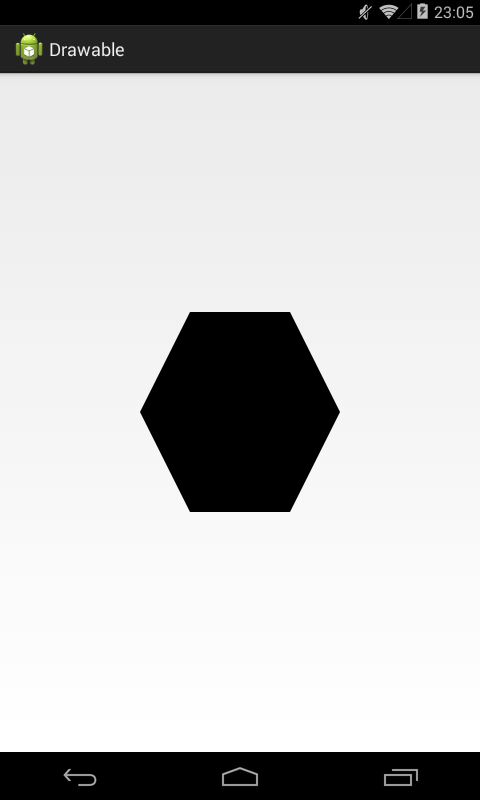
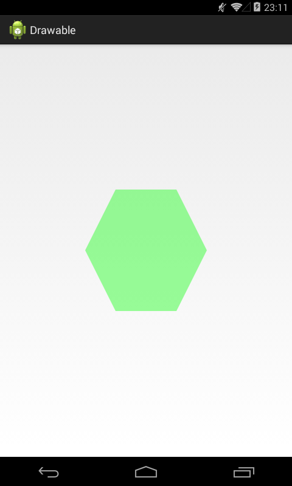
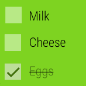
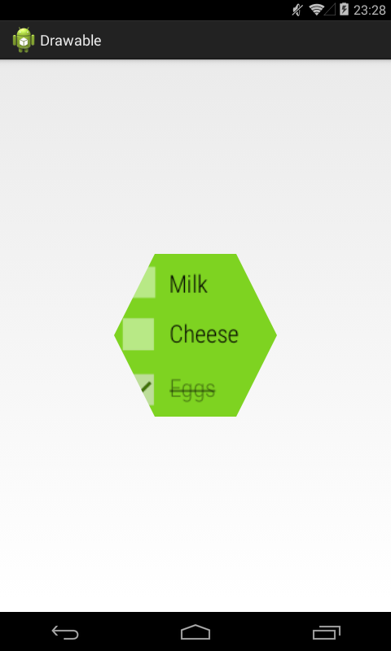

В этом уроке:
- создаем Drawable
В прошлых уроках мы рассмотрели несколько системных Drawable, теперь предлагаю вам научиться создавать их самим. Drawable – это абстрактный класс, и его наследникам необходимо реализовать 4 следующих метода:
1) public abstract void draw(Canvas canvas) – это, пожалуй, самый главный метод, т.к. здесь нам дается канва и нам необходимо на ней нарисовать то, что должен отображать наш кастомный Drawable
2) public abstract int getOpacity() – насколько я понял документацию, в этом методе нам следует вернуть значение прозрачности нашего Drawable. Всего есть 4 константы:
UNKNOWN – прозрачность неизвестна
TRANSPARENT – Drawable будет полностью прозрачным
TRANSLUCENT – Drawable будет состоять из прозрачных и непрозрачных участков
OPAQUE – Drawable будет полностью непрозрачным
Т.е. если кто-то, например, надумает из вашего Drawable сделать bitmap, то он может методом getOpacity запросить прозрачность и, если вы вернете константу OPAQUE, то это будет означать, что можно использовать конфиг RGB_565 вместо ARGB_8888, т.е. не тратить биты памяти на прозрачность. (Подробнее про конфиги, биты и память читайте в уроке 157).
3) public abstract void setAlpha (int alpha) – тут нам дают значение прозрачности и нам надо каким то образом применить это к итоговому изображению
4) public abstract void setColorFilter (ColorFilter colorFilter) – аналогичен предыдущему, только на вход идет не альфа, а ColorFilter.
Шестиугольник
Давайте создадим свой Drawable и на этом примере станет понятней как реализовать вышеописанные 4 метода. Для примера создадим Drawable, который будет выводить шестиугольник. Класс назовем HexagonDrawable и не забываем указать, что он наследник класса Drawable:
import android.graphics.Canvas;
import android.graphics.ColorFilter;
import android.graphics.Paint;
import android.graphics.Path;
import android.graphics.PixelFormat;
import android.graphics.Rect;
import android.graphics.drawable.Drawable;
public class HexagonDrawable extends Drawable {
private Paint mPaint = new Paint(Paint.ANTI_ALIAS_FLAG);
private Path mPath = new Path();
@Override
public void draw(Canvas canvas) {
canvas.drawPath(mPath, mPaint);
}
@Override
public int getOpacity() {
return PixelFormat.TRANSLUCENT;
}
@Override
public void setAlpha(int alpha) {
mPaint.setAlpha(alpha);
}
@Override
public void setColorFilter(ColorFilter colorFilter) {
mPaint.setColorFilter(colorFilter);
}
@Override
protected void onBoundsChange(Rect bounds) {
super.onBoundsChange(bounds);
int width = bounds.width();
int height = bounds.height();
mPath.reset();
mPath.moveTo(0, height/2);
mPath.lineTo(width/4, 0);
mPath.lineTo(width*3/4, 0);
mPath.lineTo(width, height/2);
mPath.lineTo(width*3/4, height);
mPath.lineTo(width/4, height);
mPath.close();
}
}В методе draw просто выводим mPath (который будет сформирован в другом методе) на канву, используя кисть mPaint.
В методе getOpacity возвращаем TRANSLUCENT, т.к. у нас будет непрозрачный шестиугольник, а оставшееся пространство Drawable будет прозрачным. Документация, кстати, рекомендует использовать именно TRANSLUCENT, если точно не знаете, что указать.
Методы setAlpha и setColorFilter я просто переадресую кисти mPaint. Тут все просто, т.к. кисть у меня всего одна, и она при рисовании сама учтет переданные ей эти данные.
Вообще, методы setAlpha и setColorFilter можно не реализовывать и оставить пустыми, ваш Drawable будет работать и без них. Но если вдруг кто-то (или вы сами) будет использовать ваш Drawable и захочет сделать его полупрозрачным или применить ColorFilter, то он не получит ожидаемого результата, т.к. методы не реализованы.
Кроме 4 обязательных методов пришлось еще реализовать метод onBoundsChange. Этот метод вызывается когда меняется размер Drawable. А т.к. нам нужно нарисовать 6-тиугольник размером с Drawable, мы должны знать его размер. Здесь мы получаем ширину и высоту Drawable и используем их для создания path-фигуры 6-тиугольника.
Осталось в layout повесить View, задать ему размер, например 200x200 dp и в коде задать ему наш HexagonDrawable в качестве background
View view = findViewById(R.id.view);
Drawable dr = new HexagonDrawable();
view.setBackgroundDrawable(dr);Результат:

Мы создали Drawable, который просто рисует 6-иугольник дефолтным черным цветом. Но это выглядит немного скучновато, поэтому давайте «добавим красок» и реализуем возможность указания любого цвета для заливки шестиугольника.
Цветной шестиугольник
Функционал уже созданного класса мы менять не будем, пусть он так и отображает черный шестиугольник. Мы создадим новый класс, который будет наследником HexagonDrawable.
Но сначала в класс HexagonDrawable все же придется добавить такой метод
protected Paint getPaint() {
return mPaint;
}Он позволит наследникам HexagonDrawable получать доступ к кисти, которая рисует шестиугольник. И, соответственно, меняя параметры кисти мы будем получать изменения рисунка.
Теперь создаем класс ColorHexagonDrawable:
public class ColorHexagonDrawable extends HexagonDrawable {
public ColorHexagonDrawable(int color) {
getPaint().setColor(color);
}
}Он наследует класс HexagonDrawable, который мы создали ранее, т.е. он тоже будет рисовать 6-тиугольник, но в конструкторе мы добавили возможность указания цвета. Используя добавленный в HexagonDrawable метод getPaint мы получаем кисть и задаем ей требуемый цвет.
Создаем объект ColorHexagonDrawable с указанием зеленого цвета, и давайте заодно проверим, работает ли прозрачность:
View view = findViewById(R.id.view);
Drawable dr = new ColorHexagonDrawable(Color.GREEN);
dr.setAlpha(50);
view.setBackgroundDrawable(dr);Результат:

Мы указали зеленый цвет и значение прозрачности. Оба этих значения были переданы кисти, что мы и видим в итоге на экране - зеленый полупрозрачный шестиугольник.
Таким образом у нас теперь есть целых два собственных Drawable: один рисует черный шестиугольник, а второй еще и позволяет указать цвет. Сделаем третий, который возьмет Bitmap и сделает из него шестиугольник.
Шестиугольник из картинки
Создаем класс BitmapHexagonDrawable, наследуя HexagonDrawable
import android.graphics.Bitmap;
import android.graphics.BitmapShader;
import android.graphics.Rect;
import android.graphics.Shader;
public class BitmapHexagonDrawable extends HexagonDrawable {
Bitmap mOriginBitmap;
public BitmapHexagonDrawable(Bitmap bitmap) {
mOriginBitmap = bitmap;
}
@Override
protected void onBoundsChange(Rect bounds) {
super.onBoundsChange(bounds);
Bitmap bitmap = Bitmap.createScaledBitmap(mOriginBitmap, bounds.width(), bounds.height(), true);
BitmapShader shader = new BitmapShader(bitmap, Shader.TileMode.CLAMP, Shader.TileMode.CLAMP);
getPaint().setShader(shader);
}
}В конструктор передаем Bitmap, а в onBoundsChange берем размеры Drawable, создаем Bitmap этого же размера, создаем на его основе шейдер и передаем его в кисть. Про шейдеры подробнее можно почитать в Уроке 165.
Для примера я возьму вот эту картинку

Кладем ее в папку res под именем picture.png. Теперь создаем с нее Bitmap и передаем его в конструктор BitmapHexagonDrawable.
View view = findViewById(R.id.view);
Bitmap bitmap = BitmapFactory.decodeResource(getResources(), R.drawable.picture);
Drawable dr = new BitmapHexagonDrawable(bitmap);
view.setBackgroundDrawable(dr);Результат:

Картинка стала шестиугольной формы.